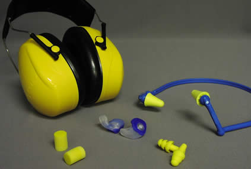

Видя как время от времени народ подрывается, обжигается, ранится по глупости, не могу не опубликовать этот простой и недорогой список средств индивидуальной защиты, без которого вообще нельзя заниматься никакой деятельностью повышенной опасности с применением химикатов и горючих/взрывчатых веществ.
Сначала зрение, как самое важное:

Маска на все лицо. Отлично защищает глаза и кожу, только затрудняет дыхание немного.
Нужна когда много дряни летит во все стороны.
Очки - годятся тогда, когда за лицо можно не беспокоиться, а только за попадание чего-то в глаза.
Они бывают прозрачные - для помещений и в пасмурную погоду на улице, коричневые - для солнечной погоды и желтые - для сумерек (усиливают яркость).
Слух:

Все что на этой картинке годится в той или иной степени в зависимости от ситуации.
Я стреляю по тарелочкам и по бумаге регулярно и пришел к выводу, что удобнее многоразовых резиновых ушных затычек ничего не бывает - они не мешают одеть очки и шапку. Наушники хороши только летом или в кондиционированном помещении, а еще они придавливают дужки очков к голове и там начинает болеть через час-другой.
Кожа:

Виниловые или силиконовые перчатки (не резиновые и не латексные).
Лучше брать более жесткие, которыми пользуются механики в автомастерских, чем те, которыми пользуются врачи.
Эти прочнее и дольше не рвутся.
Стоит это все не так дорого, чтобы рисковать, а потом спрашивать "а у меня это пройдет?"
Берегите здоровье, блин!

 Быстрый ответ
Быстрый ответ